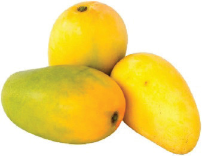
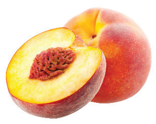
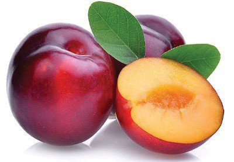
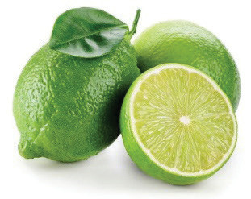
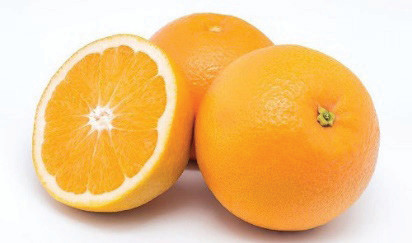
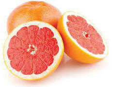
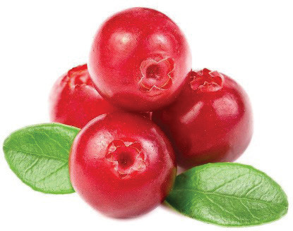
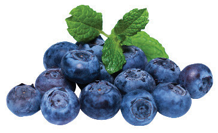

Figure 4.3: Stone fruits
Citrus fruits: These fruits have juicy pulp inside their leathery skins. They grow on trees, bushes or shrubs. They include oranges, grapefruits, tangerines, lemons and limes. Figure 4.4 illustrates citrus fruits.



Figure 4.4: Citrus fruits
Berry fruits: These are small, fleshy fruits with numerous seeds. Examples include blueberries and cranberries. Figure 4.5 is illustrative of berry fruits.


Figure 4.5: Berry fruits
Dry fruits: These fruits are normally eaten dry, such as baobab fruit and tamarind. Others, such as sultanas and currants, can be dried through processing. Figure 4.6 is illustrative of dry fruits.